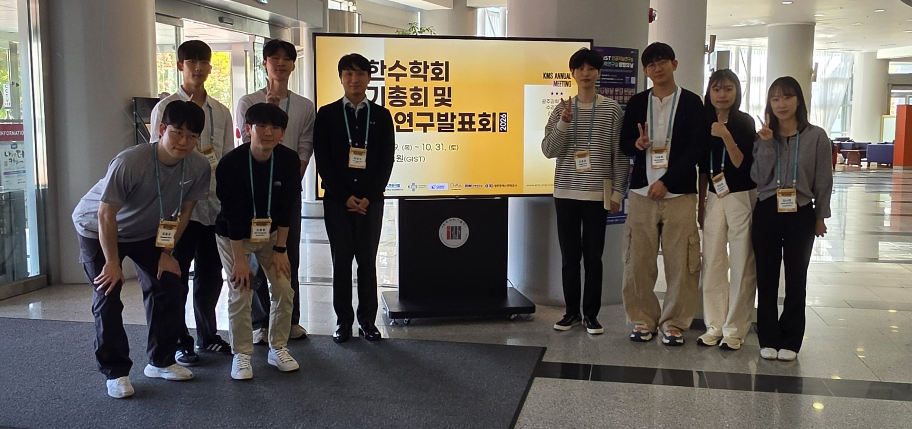
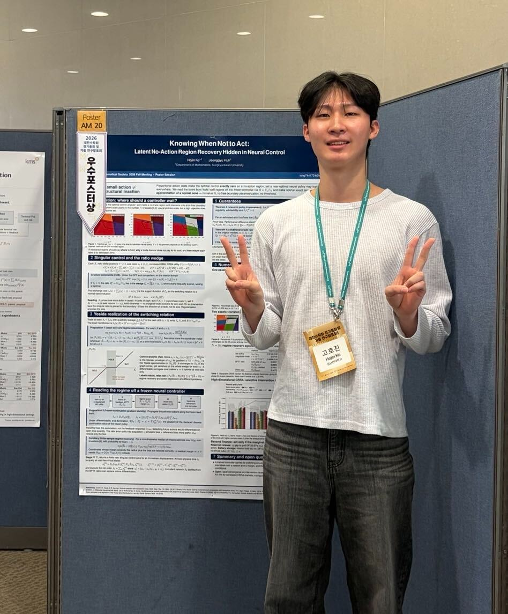
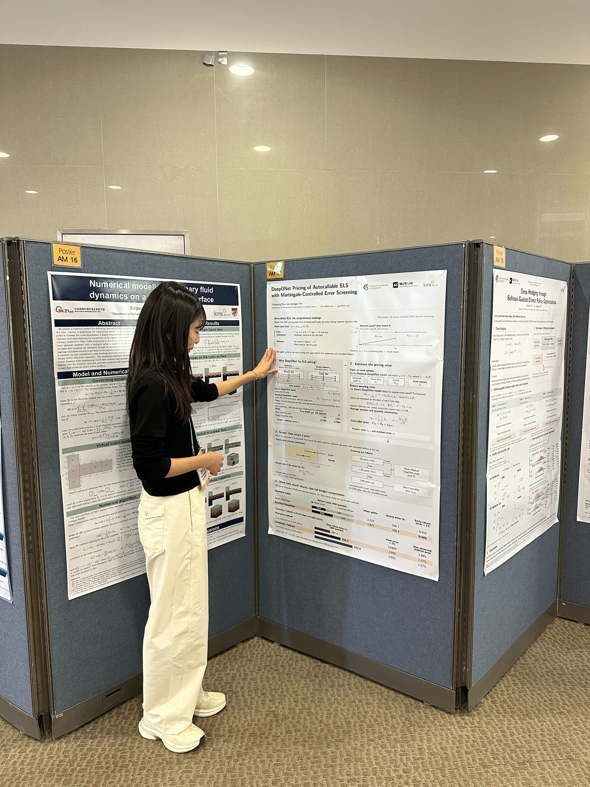
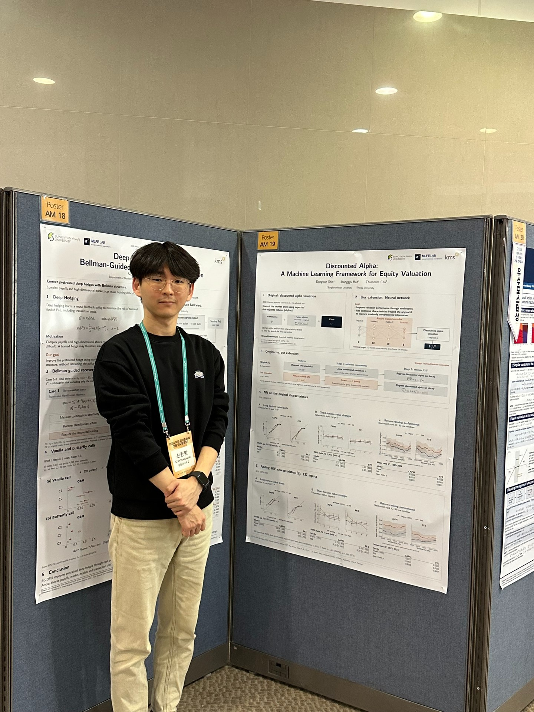
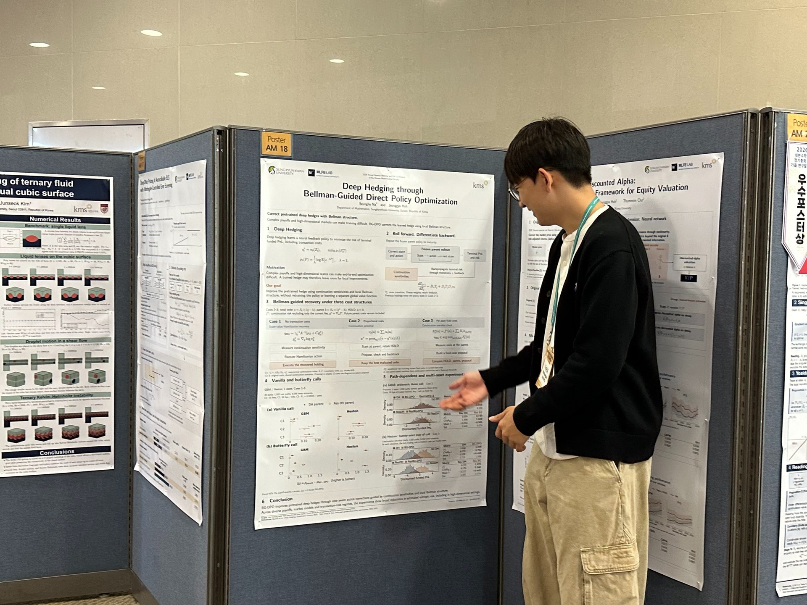

MLFE Lab participated in the 2026 Korean Mathematical Society (KMS) Fall Meeting, held at Gwangju Institute of Science and Technology (GIST) from October 29 to 31. Jeonggyu Huh gave a special-session talk, and Hojin Ko, Yoonyoung Byun, Dongwan Shin, and Seungho Na presented posters.

MLFE Lab at the 2026 KMS Fall Meeting.

Hojin Ko — Knowing When Not to Act: Latent No-Action Region Recovery Hidden in Neural Control.

Yoonyoung Byun — DeepONet Pricing of Autocallable ELS with Martingale-Controlled Error Screening.

Dongwan Shin — Discounted Alpha: A Machine Learning Framework for Equity Valuation.

Seungho Na — Deep Hedging through Bellman-Guided Direct Policy Optimization.
Read the separate story about Hojin Ko's Outstanding Poster Award.